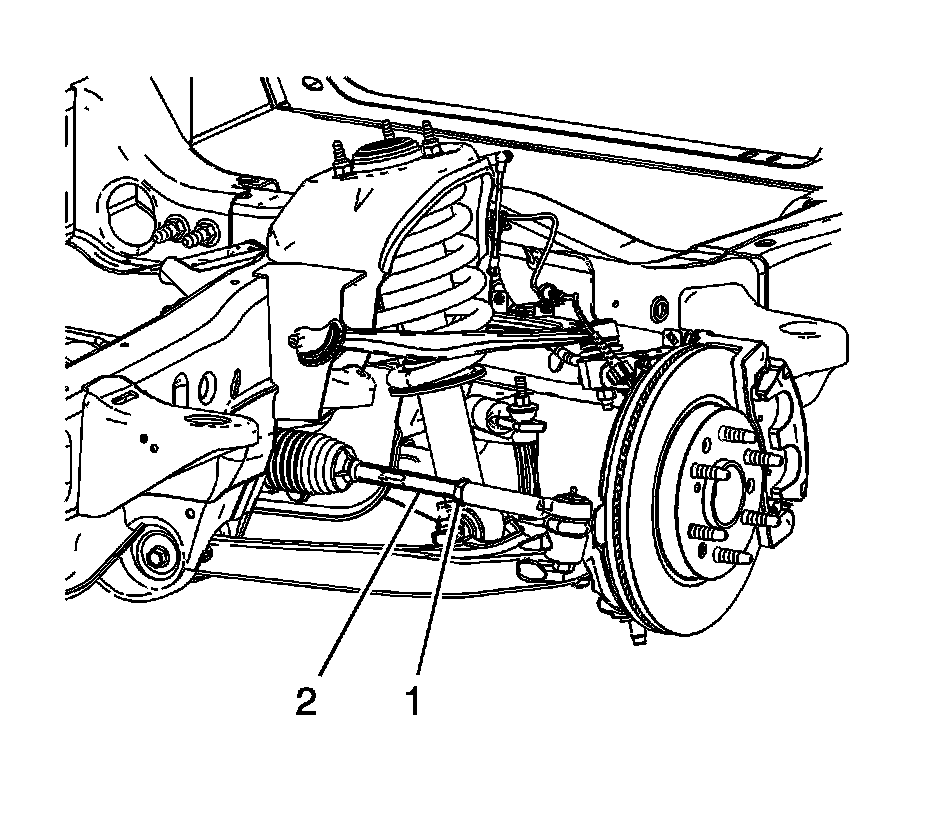

Front Toe Adjustment
Front Toe Adjustment

1. Loosen the jam nut on the inner tie rod (1).
2. Rotate the inner tie rod (2) to the required toe specification setting. Refer to Wheel Alignment Specifications.
Notice: Refer to Fastener Notice.
3. Tighten the jam nut (1) on the tie rod.
Tighten the tie rod jam to 95 N.m (70 lb ft).
4. Check the toe setting after tightening.
5. Re-adjust the toe setting if necessary.